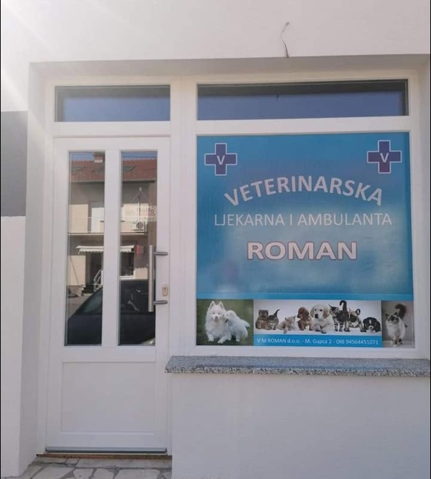

Veterinarska ambulanta
Pregledi i liječenje pasa, mačaka i drugih životinja – od štenaca do pokojeg neobičnog pacijenta.
Liječenje kućnih ljubimaca i drugih životinja, veterinarski lijekovi i hrana za pse i mačke na jednom mjestu, u Ulici Matije Gupca. U sezoni kolinja ovdje se pregledava i meso na trihinelu.

„Prodaja veterinarskih lijekova i usluge liječenja” – tako se Roman sam predstavlja. Za pregled ili pitanje o lijeku najbrže je nazvati.
Pregledi i liječenje pasa, mačaka i drugih životinja – od štenaca do pokojeg neobičnog pacijenta.
Prodaja veterinarskih lijekova i preparata za kućne ljubimce i domaće životinje.
U ljekarni je asortiman hrane Royal Canin za pse i mačke, uključujući dijetalne linije.
U sezoni kolinja ambulanta pregledava meso na Trichinella spiralis. Ulaz je kroz ljekarnu.
Kako i kada
Tvrtka ROMAN d.o.o. osnovana je 1997. godine. Ambulanta i ljekarna rade na istoj adresi: Matije Gupca 2, Đakovo. Ulaz je s ulice, kroz bijela vrata uz izlog s natpisom.
Fotografije koje je ambulanta objavila na svojoj Facebook stranici, s njihovim opisima.
Ponedjeljkom, srijedom i petkom od 7 do 14 sati, utorkom i četvrtkom od 13 do 19 sati, subotom od 7 do 12 sati. Nedjeljom je zatvoreno. U sezoni kolinja i za vrijeme godišnjeg odmora radno vrijeme može biti drukčije, pa je najbolje nazvati.
U Đakovu, na adresi Matije Gupca 2 (31400 Đakovo). Na izlogu je plavi natpis „Veterinarska ljekarna i ambulanta Roman”.
Ljekarna prodaje veterinarske lijekove i hranu Royal Canin za pse i mačke. Za lijekove koji se izdaju na recept potreban je veterinarski recept.
U sezoni kolinja ambulanta pregledava meso na trihinelu (Trichinella spiralis). Ulaz je kroz veterinarsku ljekarnu. Više na stranici Pregled na trihinelu.
Nazovite fiksni broj 031 812 240 ili mobitel 098 437 989. Kratku poruku možete poslati i preko obrasca ispod.
| Ponedjeljak | 7 – 14 h |
|---|---|
| Utorak | 13 – 19 h |
| Srijeda | 7 – 14 h |
| Četvrtak | 13 – 19 h |
| Petak | 7 – 14 h |
| Subota | 7 – 12 h |
| Nedjelja | zatvoreno |